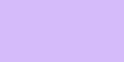
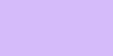

Wie lassen sich die Normen klassischer Websites brechen?
Logo oben links. Navigation im Header. Weißer Hintergrund, klare Gridstruktur. Jede Website sieht gleich aus – zweidimensional, vorhersagbar, langweilig. Genau diese Norm bricht dieses Projekt. Es ist eine Website, die sich nicht wie ein Template anfühlt, sondern wie ein Einzelstück. Nach dem Motto preventDefault() (von Maximilian Kiepe) entstand das Anti-Template-Design – etwas, das man nicht mit Baukästen oder Themes bauen kann, sondern per Hand schreiben muss. Handmade Web. Ein bewusster Bruch mit Gewohnheiten. Kein standardisierter Rahmen, sondern ein neuer Blick auf das Medium selbst.
Sehen wie du siehst
Während ich mit der Struktur der Website Sehgewohnheiten herausfordern wollte, machen die Werke von James Turrell genau das Gleiche – nur auf einer anderen Ebene. Er lenkt die Wahrnehmung nicht, er stellt sie in Frage. Licht wird bei ihm nicht zur Beleuchtung, sondern zum Raum. Seine Werke sind keine Bilder, die man anschaut – sie sind Erfahrungen, die man durchlebt. Langsam. Meditativ. Still. In einer Web-Welt, die auf Geschwindigkeit und Effizienz ausgelegt ist, bilden seine Arbeiten einen Gegenpol. Die Website nimmt seine Haltung auf, aber drängt sich nicht in den Vordergrund. Trotz des „Anti-Template-Designs“ bleibt sie zurückhaltend. Sie bildet einen Rahmen, der Platz schafft. Damit seine Werke ihre volle Wirkung erzielen.
 

interface -> spaceface
Turrells Werke existieren nicht auf der Fläche – sie sind Räume, durch die man sich bewegt, in denen Wahrnehmung langsam entsteht. Diese räumliche Erfahrung ins Digitale zu übersetzen ist essentieller Bestandteil des Projekts. Die Simplizität der Übersetzung der räumlichen Erfahrung ins Digitale zwingt zur Konzentration auf das Wesentliche. Keine Kamera, keine physikalische Lichtsimulation, keine spektakulären Shader – genau dadurch bleibt der Raum im Hintergrund. Die gestalterischen Haltung: Ein Webraum, der sich trotz seiner Komplexität und Einzigartigkeit zurücknimmt, um mehr Präsenz für das, was zählt.